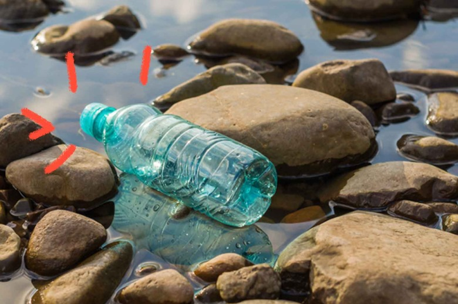

Antes da chuva: Os sensores ultrassônicos instalados nas lixeiras dos bueiros vão monitorar constantemente o nível de resíduos neles presentes. Todos esses dados coletados pelos sensores são enviados para centrais de controle de prefeituras ou para o serviço de limpeza responsável Durante a chuva: Todo o lixo que seria arrastado para dentro dos bueiros e esgotos ficam retidos dentro da lixeira, impedindo que o mesmo passe, deixando espaço somente a água escoar para o esgoto.
Ação rápida da equipe de limpeza: Com base nos alertas enviados pelos sensores, as equipes de limpeza serão acionadas para a retirada do lixo apenas nos pontos críticos – ou seja, onde a lixeira já está cheia. Pós chuva: Com os dados registrados, a gestão pública consegue mapear quais regiões mais acumulam lixo e em quais horários, ajustando a frequência de limpeza nos locais.
